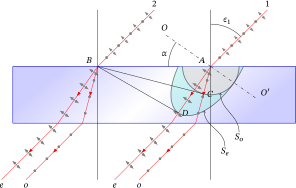
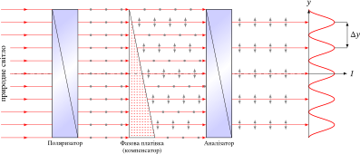
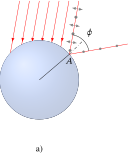
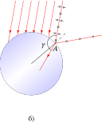
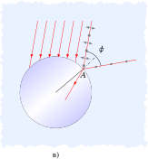
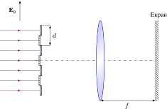

Оптика. Практичний курс
6 Поляризація та оптична анізотропія
§ 6.1 Основні поняття і закони
Електромагнітні хвилі поперечні. Це означає, що напрямок коливань вектора електричного \(\vect {E} \) та магнітного полів \(\vect {H} \) перпендикулярні до напрямку поширення хвилі (рис. 6.1). Вектор \(\vect {E} \) називають світловим вектором.
Хвилю, в якій напрямок коливань електричного вектора електромагнітної хвилі \(\vect {E} \) впорядковано будь-яким чином, називають поляризованою.
Якщо коливання вектора \(\vect {E} \) відбуваються тільки в одній площині, що проходить через промінь, ми маємо справу з плоско- (або лінійно-) поляризованою хвилею (рис. 6.2). Площина, в якій коливається вектор \(\vect {E} \), називають площиною поляризації (площиною коливань світлового вектора).
Природне світло випромінюється великою кількістю збуджених атомів випадковим чином і незалежно один від одного. Тому в природному світлі рівноймовірні всі напрямки коливань електричного поля \(\vect {E} \) (рис. 6.3).
Інший вид поляризації полягає в тому, що вектор \(\vect {E} \) обертається навколо напряму поширення хвилі, одночасно змінюючись періодично по модулю. При цьому кінець вектор \(\vect {E} \) описує еліпс (у кожній точці середовища). Таку хвилю називають еліптично-поляризованою (рис. 6.4а). Або поляризованою по колу (рис. 6.4б), якщо кінець вектора \(\vect {E} \) описує коло.
Закон Малюса
Для лінійно поляризованого світла
\(\seteqnumber{0}{6.}{0}\)\begin{equation} \label {eq:Malus_law_for_linear} I_\text {А} = I_\text {П}T_\text {A}\cos ^2\theta . \end{equation}
де \(I_\text {А} \) — інтенсивність лінійно поляризованого світла на виході аналізатора; \(I_\text {П} \) — інтенсивність лінійно поляризованого світла на вході аналізатора (на виході поляризатора, що йде перед аналізатором); \(T_\text {А} \) — коефіцієнт пропускання аналізатора за рахунок втрат на відбиття та поглинання світла; \(\theta \) — кут між площиною поляризації світла, що падає, та площиною пропускання аналізатора.
Для природного світла
\(\seteqnumber{0}{6.}{1}\)\begin{equation} \label {eq:Malus_law_for_nature} I_\text {П} = \frac 12 T_\text {П}I_\text {пр}, \end{equation}
де \(I_\text {П} \) — інтенсивність лінійно поляризованого світла на виході поляризатора; \(T_\text {П} \) — коефіцієнт пропускання поляризатора; \(I_\text {пр} \) — інтенсивність природного світла на виході поляризатора.
Інтенсивність світла на виході системи «поляризатор-аналізатор» (рис. 6.5):
\(\seteqnumber{0}{6.}{2}\)\begin{equation} \label {eq:Malus_law_for_P-A} I_\text {А} = \frac 12 T_\text {П} T_\text {A} I_\text {пр}\cos ^2\theta . \end{equation}
де \(T_\text {П} \) та \(T_\text {А} \) — коефіцієнти пропускання відповідно поляризатора та аналізатора; \(I_\text {пр} \) — інтенсивність природного світла на виході системи; \(\theta \) — кут між площинами пропускання аналізатора та поляризатора.
Кількісною характеристикою поляризації світла є ступінь поляризації:
\(\seteqnumber{0}{6.}{3}\)\begin{equation} \label {eq:P} P = \frac {I_{\max } - I_{\min }}{I_{\max } + I_{\min }}. \end{equation}
\(P = 1\) — якщо світло плоско поляризоване, \(P = 0\), якщо світло природне, \(0 < P < 1\) — якщо світло частково лінійно поляризоване.
Поляризація світла при відбитті та заломленні. Закон Брюстера
При падінні природного світла на границю розділу двох діелектриків з показниками заломлення \(n_1 \) та \(n_2 \) відбитий промінь стає частково поляризованим переважно у напрямку, перпендикулярному до площини падіння, а заломлений — частково поляризованим переважно паралельно площині падіння (рис. 6.6). Зі зміною кута падіння ступінь поляризації обох променів змінюється.
Ступінь поляризації відбитого \(R \) та заломленого \(D \) променів визначаються за формулами:
\(\seteqnumber{0}{6.}{4}\)\begin{align} P_R &= \frac {R_\perp - R_\parallel }{R_\perp + R_\parallel }, \\ P_D &= \frac {R_\perp - R_\parallel }{2 - (R_\perp + R_\parallel )} \label {eq:P_D}, \end{align} де \(R_\perp \) та \(R_\parallel \) — коефіцієнт відбиття перпендикулярної та паралельної складових природного світла, відповідно.
Загальний енергетичний коефіцієнт відбиття при цьому визначається виразом
\(\seteqnumber{0}{6.}{6}\)\begin{equation*} R = \frac 12 (R_\perp + R_\parallel ). \end{equation*}
З рівнянь Максвелла випливають вирази для коефіцієнтів відбиття:
\(\seteqnumber{0}{6.}{6}\)\begin{align} R_\perp &= \frac {\sin ^2(\epsilon _1 - \epsilon '_2)}{\sin ^2(\epsilon _1 + \epsilon '_2)}, \label {eq:R_perp}\\ R_\parallel &= \frac {\tg ^2(\epsilon _1 - \epsilon '_2)}{\tg ^2(\epsilon _1 + \epsilon '_2)}, \label {eq:R_parallel} \end{align} де \(\epsilon _1 \) — кут падіння променя природного світла на границю розділу двох діелектриків; \(\epsilon '_2 \) — кут заломлення, які пов’язані законом заломлення:
\(\seteqnumber{0}{6.}{8}\)\begin{equation*} \epsilon '_2 = \arcsin \left ( \frac {n_1}{n_2} \sin \epsilon _1\right ). \end{equation*}
При куті падіння природного світла \(\epsilon _1 \), що дорівнює
\(\seteqnumber{0}{6.}{8}\)\begin{equation} \label {eq:Brewster} \epsilon _B = \arctg \left ( \frac {n_2}{n_1} \right ), \end{equation}
з (6.8) випливає, що \(R_\parallel = 0\), тобто відбите світло повністю поляризоване в площині, перпендикулярній площині падіння, а заломлений промінь має найбільшу степінь часткової поляризації з переважним напрямом, що паралельний площині падіння (рис. 6.6). Кут \(\epsilon _B \) називається кутом Брюстера.
Відбитий та заломлений промені взаємно перпендикулярні:
\(\seteqnumber{0}{6.}{9}\)\begin{equation*} \epsilon _B + \epsilon '_2 = 90^\circ , \end{equation*}
тому
\(\seteqnumber{0}{6.}{9}\)\begin{equation*} R_{B_\perp } = \sin ^2(\epsilon _B - \epsilon '_2), \end{equation*}
а \(R = \frac 12 R_\perp \).
Ступінь поляризації заломленого променя з (6.6):
\(\seteqnumber{0}{6.}{9}\)\begin{equation*} P_D = \frac {R_\perp }{2 - R_\perp }. \end{equation*}
Якщо взяти \(N \) платівок (стопа Столетова), то при падінні під кутом Брюстера відбитий промінь буде практично повністю поляризованими. Ступінь поляризації заломленого променя:
\(\seteqnumber{0}{6.}{9}\)\begin{equation} \label {eq:P_stopa} P_D = \frac {1 - (1 - R_{B_\perp })^{2N}}{1 - (1 + R_{B_\perp })^{2N}}. \end{equation}
Поляризація світла при природному подвійному променезаломленні
Явище природного подвійного променезаломлення спостерігається при проходженні променя світла крізь анізотропні кристали. Воно полягає у розщепленні падаючого променя при заломленні на поверхні кристалу на два взаємно перпендикулярні лінійно поляризовані промені: звичайний — \(o\) (від слова «ordinary») та незвичайний — \(e\) (від слова «extraordinary») (рис 6.7).
Найсильніше двопроменезаломлення виявлено в одноосному кристалі ісландського шпату, з якого зазвичай виготовляються поляризаційні призми.
Властивості звичайного та незвичайного променів:
-
• обидва промені утворюються в точці падіння на вхідній грані кристалу. Всередині кристалу промені йдуть вздовж різних напрямів, а на виході з кристалу — паралельно один одному;
-
• обидва промені лінійно поляризовані у взаємно перпендикулярних площинах; звичайний — у площині, що перпендикулярна до оптичної осі кристалу (\(O-O' \)); незвичайний — у площині, що паралельна оптичній осі кристалу;
-
• для звичайного променя чинний закон заломлення Снелліуса
\(\seteqnumber{0}{6.}{10}\)\begin{equation*} \frac {\sin \epsilon _1}{\sin \epsilon '_2} = n_o = \mathrm {const}; \end{equation*}
для незвичайного — ні, оскільки його показник заломлення не є сталим та змінюється в залежності від напряму променя, що падає, \(n_e = n_e (\epsilon _1) \neq \mathrm {const}\);
-
• всередині кристалу звичайний та незвичайний промінь розповсюджуються з різними швидкостями
\(\seteqnumber{0}{6.}{10}\)\begin{equation*} v_o = \frac {c}{n_o}, \quad v_e = \frac {c}{n_e(\epsilon _1)}. \end{equation*}
Лише у напрямі, що паралельний оптичній осі кристала (\(O-O'\)), обидва промені розповсюджуються з однаковою швидкістю \(v_o = v_e\) та не розділяються один з одним, \(n_o = n_e\). У напрямі, перпендикулярному до оптичної осі кристалу, обидва промені також не розділюються просторово, але мають найбільшу різницю швидкості розповсюдження \(v_e - v_o\) та найбільшу різницю показників заломлення \(n_e - n_o = b\) що називається показником подвійного променезаломлення;
-
• якщо промінь світла, що падає на кристал, є природнім, то звичайний та незвичайний промені некогерентні між собою, а їх інтенсивності визначаються виразами
\(\seteqnumber{0}{6.}{10}\)\begin{equation*} I_o = \frac 12 T_o I_\text {пр}, \quad I_e = \frac 12 T_e I_\text {пр}, \end{equation*}
де \(T_o \) та \(T_e \) — коефіцієнти пропускання кристалом відповідно звичайного та незвичайного променів. У недихроїчних кристалах \(T_e = T_o \approx 1\) та \(I_e \approx I_o \), у дихроїчних (кристал турмаліну) з великою різницею поглинання звичайного та незвичайного променів \(T_o \ll T_e \) і \(I_o \ll I_e \) ;
-
• якщо промінь світла, що падає на кристал, лінійно поляризований, то звичайний та незвичайний промені когерентні між собою, а інтенсивність світла \(I_1 \), що падає, розподіляється між ними у відповідності із законом Малюса (6.1):
\(\seteqnumber{0}{6.}{10}\)\begin{equation*} I_e = T_eI_1\cos ^2\theta , \quad I_o = T_oI_1\sin ^2\theta , \end{equation*}
де \(\theta \) — кут між площиною поляризації променя, що падає, та оптичною віссю кристалу (\(O-O' \)).
-
• По відношенню до звичайного променя кристал є ізотропним середовищем. Хвильову поверхню для точкового звичайного джерела \(S \) у кристалі можна представити сферою. Анізотропія кристалу проявляється для незвичайного променя. Хвильова поверхня незвичайного джерела \(S \) представляється еліпсоїдом обертання, що вписаний у сферу хвильової поверхні звичайного променя (для додатного кристалу \(b > 0 \), рис. 6.8а) або описаний навколо сфери (для від’ємного кристалу \(b < 0 \), рис. 6.8б).
Поляризаційні прилади
Явище подвійного променезаломлення використовується для виготовлення поляризаційних призм, фазових пластинок та інших оптичних елементів.
Поляризаційні призми складаються з двох або більше тригранних призм з одновісного кристала з однаковою або різною орієнтацією оптичних осей, склеєних між собою прозорою речовиною або розділеним повітряним прошарком. Якщо із призми виходить лише один пучок лінійно поляризованого світла, то призма називається однопроменевою, якщо обидва — то двопроменевою. Прикладом однопроменевої призми є призма Ніколя, яку називають ніколем (рис. 6.9). В цій призмі звичайний промінь падає на зазор з канадським бальзамом (оптично менш густим середовищем \(n_o > n > n_e\)) під кутом більше граничного і зазнає повного внутрішнього відбиття. Незвичайний промінь проходить наскрізь.
Фазові платівки — це поляризаційні елементи для монохроматичного світла. Вони вирізаються з кристалу зі сторонами, що паралельні його оптичній осі та дають на виході звичайну та незвичайну хвилю, які йдуть разом з максимальною різницею фаз між ними.
Якщо напрям коливань електричного вектора \(\vect {E} = \vect {E}_0 e^{i\omega t} \) в падаючому поляризованому світлі становить кут \(\alpha \) з одним з головних напрямків платівки (рис. 6.10), то амплітуди коливань в незвичайній і звичайній хвилях будуть відповідно дорівнювати:
\(\seteqnumber{0}{6.}{10}\)\begin{equation*} E_e = E_0 \cos \alpha ,\quad E_o = E_0\sin \alpha . \end{equation*}
Пройшовши через товщу пластинки \(d \), ці дві хвилі набудуть різниці ходу \(\Delta = (n_e - n_o) d\), тобто звичайна хвиля відстане по фазі від незвичайної на величину:
\(\seteqnumber{0}{6.}{10}\)\begin{equation} \label {eq:phase_delta} \delta = \frac {2\pi }{\lambda } (n_e - n_o) d, \end{equation}
Додавання двох взаємно перпендикулярних коливань з різними амплітудами і різницею фаз описується рівнянням:
\(\seteqnumber{0}{6.}{11}\)\begin{equation} \label {eq:ellipse_eqn} \frac {E_x^2}{E_o^2} + \frac {E_y^2}{E_e^2} - 2\frac {E_xE_y}{E_oE_e}\cos \delta = \sin ^2\delta . \end{equation}
Тобто, тип поляризації залежить від \(\delta \) та \(\alpha \).
Розглянемо часткові випадки.
Якщо товщина платівки дорівнюватиме величині:
\(\seteqnumber{0}{6.}{12}\)\begin{equation} \label {eq:lambda/4} d = \frac {2m+1}{n_e - n_o}\frac \lambda 4, \quad \text {(\emphz {чвертьхвильова пластинка})} \end{equation}
різниця фаз між променями з (6.11) складатиме
\(\seteqnumber{0}{6.}{13}\)\begin{equation*} \delta = (2m+1)\frac \pi 2. \end{equation*}
Підставивши цей вираз в (6.12), отримаємо:
\(\seteqnumber{0}{6.}{13}\)\begin{equation*} \frac {E_x^2}{E_o^2} + \frac {E_y^2}{E_e^2} = 1, \end{equation*}
яке є рівнянням еліпса, орієнтованого вздовж головної осі. Така пластинка перетворює лінійно поляризоване світло у еліптично поляризоване та навпаки (рис.6.11).
Співвідношення довжин його півосей залежить від величини кута \(\alpha \). Зокрема, при \(\alpha = 45^\circ \) \(E_e = E_o \), так що еліпс перетвориться на коло, що описується рівнянням
\(\seteqnumber{0}{6.}{13}\)\begin{equation*} E_x^2 + E_y^2 = E_o^2. \end{equation*}
В даному випадку маємо світло, поляризоване по колу.
Якщо товщина пластинки дорівнюватиме величині:
\(\seteqnumber{0}{6.}{13}\)\begin{equation} \label {eq:lambda/2} d = \frac {2m+1}{n_e - n_o}\frac \lambda 2, \quad \text {(\emphz {півхвильова пластинка})} \end{equation}
різниця фаз між променями з (6.11) складатиме
\(\seteqnumber{0}{6.}{14}\)\begin{equation*} \delta = (2m+1)\pi , \end{equation*}
а рівняння (6.12) дає рівняння прямої, що повернута на кут \(2\alpha \) по відношенню до напрямку поляризації падаючої хвилі, тобто, така пластинка повертає площину поляризації лінійно поляризованого світла, що на неї падає, на подвійний кут (рис.6.12).
Інтерференція поляризованого світла
Інтерференція поляризованих променів спостерігається при проходженні променя світла крізь систему поляризатор – фазова пластинка — аналізатор (рис. 6.13). Два когерентні промені, що виходять з аналізатора, поляризовані у одній площині та мають різницю фаз (6.11), інтерферують між собою, підсилюючи та ослаблюючи один одного в залежності від значень \(\delta \). Інтенсивність результуючої хвилі виражається інтерференційною формулою (без врахування поглинання):
\(\seteqnumber{0}{6.}{14}\)\begin{equation} \label {eq:Interferention_of_polarized} I = \frac 12 I_\text {пр} \left ( \cos ^2\beta - \sin 2\alpha \cdot \sin 2(\alpha -\beta )\cdot \sin ^2\frac \delta 2\right ), \end{equation}
де \(\beta \) — кут між площинами пропускання аналізатора (\(A - A'\)) та поляризатора (\(P - P'\)); \(\alpha \) — кут між площиною пропускання поляризатора та оптичною віссю фазової пластинки (\(O - O' \)).
Найчастіше на практиці застосовують схеми, де \(\alpha = 45^\circ \), а поляризатор і аналізатор паралельні (\(\beta = 0 \)):
\(\seteqnumber{0}{6.}{15}\)\begin{equation} I_\parallel = \frac 12 I_\text {пр} \cos ^2\frac \delta 2, \end{equation}
або схрещені (\(\beta = 90^\circ \)):
\(\seteqnumber{0}{6.}{16}\)\begin{equation} \label {eq:I_perp} I_\perp = \frac 12 I_\text {пр} \sin ^2\frac \delta 2. \end{equation}
При освітленні схеми білим світлом, жмуток променів, що виходить, забарвлюється в той колір, довжина хвилі якого \(\lambda \) відповідає умові інтерференційного максимуму:
\(\seteqnumber{0}{6.}{17}\)\begin{equation} \delta = 2m\pi , \end{equation}
при якій \(I_\parallel = \frac 12 I_\text {пр} \) та \(I_\perp = 0\). При повороті аналізатора на \(90^\circ \) (\(\beta = 90^\circ \)), жмуток променів, що виходить, забарвлюється у колір додатковий до кольору, що відповідає довжині хвилі \(\lambda \), коли \(I_\parallel = 0 \) та \(I_\perp = \frac 12 I_\text {пр}\). Таке забарвлення білого світла, що проходить крізь систему, називається монохроматичною поляризацією.
§ 6.2 Штучне подвійне променезаломлення
Штучна анізотропія — це подвійне променезаломлення, яке штучно викликається у ізотропних прозорих речовинах під дією пружних деформацій, електричного та магнітного полів. Спостерігається вона у схемах, що аналогічні схемам інтерференції поляризованих променів (рис. 6.13), у яких замість фазової пластинки встановлюється комірка штучного подвійного променезаломлення. У цих схемах аналізатор та поляризатор зазвичай схрещені (\(\beta = 90^\circ \)), а оптична вісь комірки штучного подвійного променезаломлення (\(O - O' \)) орієнтується під кутом \(45^\circ \) до площини пропускання поляризатора (\(\alpha = 45^\circ \)), інтенсивність жмутка на виході системи виражається формулою (6.17):
\(\seteqnumber{0}{6.}{18}\)\begin{equation*} I_\perp = \frac 12 I_\text {пр} \sin ^2\frac \delta 2, \end{equation*}
де
\(\seteqnumber{0}{6.}{18}\)\begin{equation*} \delta = \frac {2\pi }{\lambda } (n_e - n_o) d, \end{equation*}
різниця фаз звичайного та незвичайного променів; \((n_e - n_o) \) — штучне подвійне променезаломлення; \(d \) — шлях світла у комірці.
Ефект фотопружності. Під дією пружних деформацій ізотропні прозорі тверді матеріали стають анізотропними зі штучним подвійним променезаломленням, що дорівнює:
\(\seteqnumber{0}{6.}{18}\)\begin{equation} \label {eq:photoelasticity} n_e - n_o = k\sigma , \end{equation}
де \(k \) — коефіцієнт пропорційності, що залежить від типу матеріалу; \(\sigma \) — внутрішня напруга викликана деформацією.
Лінійний електрооптичний ефект, або ефект Поккельса спостегігається в кристалах. Під дією поперечного (або поздовжнього) електричного поля деякі ізотропні кристали, частіше всього штучного походження, стають анізотропними зі штучним подвійним променезаломленням:
\(\seteqnumber{0}{6.}{19}\)\begin{equation} \label {eq:pollels_effect} n_e - n_o = k E, \end{equation}
де \(k\) — коефіцієнт пропорційності, що залежить від типу кристалу, \(E \) — напруженість електричного поля.
Квадратичний електрооптичний ефект, або ефект Керра спостерігається в газах, рідких, склоподібних та кристалічних діелектриках з центрами симетрії і полягає у зміні показника заломлення під впливом електричного поля:
\(\seteqnumber{0}{6.}{20}\)\begin{equation} \label {eq:kerr_effect} n_e - n_o = K\lambda E^2, \end{equation}
де \(K\) — стала Керра, \(\lambda \) — довжина хвилі в вакуумі, \(E \) — напруженість електричного поля.
Діелектричне середовище, яке у вихідному стані було оптично ізотропним, під дією електричного поля стає анізотропним, що призводить до подвійного променезаломлення. Оптична вісь при цьому збігається з напрямком силових ліній напруженості електричного поля. Для дослідження анізотропних властивостей рідини (нітробензолу, сірководню тощо) використовується комірка Керра.
Аналогічно виникненню штучного подвійного променезаломлення під впливом електричного поля можливе створення штучної оптичної анізотропії під дією магнітного поля ( ефект Коттона-Мутона):
\(\seteqnumber{0}{6.}{21}\)\begin{equation} \label {eq:cotton-mutton_effect} n_e - n_o = C\lambda H^2, \end{equation}
де \(C\) — стала Коттона-Мутона, \(\lambda \) — довжина хвилі в вакуумі, \(H \) — напруженість магнітного поля.
Обертання площини поляризації
При проходженні лінійно поляризованого світла крізь прозорі оптично активні речовини виникає природне обертання (закручення) площини поляризації на кут:
\(\seteqnumber{0}{6.}{22}\)\begin{equation} \label {eq:rotation_angle} \psi = \alpha d, \end{equation}
де \(\alpha \) — стала обертання, що залежить від речовини та довжини хвилі світла; \(d \) — шлях світла у оптично активній речовині.
Якщо помістити оптично активну речовину між схрещеними поляризатором та аналізатором (рис. 6.14), то на виході останнього з’явиться світло, інтенсивність якого визначається законом Малюса (без урахування поглинання):
\(\seteqnumber{0}{6.}{23}\)\begin{equation} I_\text {А} = \frac 12 I_\text {пр} \sin ^2\psi , \end{equation}
де \(I_\text {пр} \) — інтенсивність природного світла на виході поляризатора; \(\psi \) — кут повороту площини поляризації у речовині.
Кут повороту площини поляризації у розчинах оптично активних речовин у неактивному розчиннику визначається виразом ( закон Біо):
\(\seteqnumber{0}{6.}{24}\)\begin{equation} \label {eq:Bio} \psi = [\alpha ] cd, \end{equation}
де \([\alpha ] \) — питома стала обертання, що залежить від довжини хвилі світла; \(c \) — концентрація активної речовини у розчині; \(d \) — шлях світла у розчині.
Штучне обертання площини поляризації у прозорих оптично неактивних речовинах здійснюється у поздовжньому магнітному полі ( ефект Фарадея) на кут:
\(\seteqnumber{0}{6.}{25}\)\begin{equation} \label {eq:Faraday_effect} \psi = VHd, \end{equation}
де \(V \) — питоме магнітне обертання (стала Верде), що залежить від речовини та довжини хвилі світла; \(H \) — напруженість поздовжнього магнітного поля; \(d \) — шлях світла у магнітному поля та речовині.
§ 6.3 Приклади розв’язування задач
Приклад 33. Через аналізатор розглядається частково поляризоване світло. При повороті аналізатора на кут \(60^\circ \) від положення, що відповідає максимальній яскравості, яскравість світла, що проходить крізь систему, зменшується удвічі. Представляючи частково поляризоване світло як суму природного та лінійно поляризованого та нехтуючи поглинанням поляризатора, визначити: а) відношення інтенсивностей природного та лінійного поляризованого світла; б) ступінь поляризації світла, що розглядається.
Розв’язок.
а) Інтенсивність частково поляризованого світла, що падає на аналізатор, можна представити сумою
\(\seteqnumber{0}{6.}{26}\)\begin{equation*} I_\text {ЧП} = I_\text {П} + I_\text {пр}, \end{equation*}
де \(I_\text {П} \) — інтенсивність лінійно поляризованої складової; \(I_\text {пр} \) — інтенсивність природної складової.
У першому положенні максимальної яскравості (\(\phi = 0 \)) згідно із законом Малюса (6.1) та \(T_\text {А} = 1 \)) крізь аналізатор проходить вся лінійно поляризована складова \(I_\text {П} \) та згідно з (6.2) — поляризоване світло, інтенсивність якого дорівнює половині інтенсивності природної складової: \(I_{A_1} = I_\text {П} + 0,5I_\text {пр} \). У другому положенні (\(\phi = 60^\circ \)) згідно з (6.1) та (6.2) світло, що проходить крізь аналізатор, має сумарну інтенсивність: \(I_{A_2} = I_\text {П} \cos ^2\phi + 0,5I_\text {пр} \). За умовою задачі \(I_{A_1} = 2I_{A_2} \), звідки отримуємо
\(\seteqnumber{0}{6.}{26}\)\begin{equation*} \frac {I_\text {пр}}{I_\text {П}} = 2(1 - 2\cos ^2 \phi ) = 1,\quad \text {тобто} \quad I_\text {пр} = I_\text {П}. \end{equation*}
Мінімальна яскравість на виході аналізатора відповідає куту його повороту \(\phi = 90^\circ \), коли \(I_{A_3} = 0,5I_\text {пр} \).
б) Ступінь поляризації частково поляризованого світла характеризує у ньому частину лінійно поляризованої складової та визначається за формулою
\(\seteqnumber{0}{6.}{26}\)\begin{equation*} P = \frac {I_{\max } - I_{\min }}{I_{\max } + I_{\min }}, \end{equation*}
де \(I_{\max } \) і \(I_{\min } \) — максимальна (\(\phi = 0 \)) та мінімальна (\(\phi = 90^\circ \)) інтенсивності у двох взаємно перпендикулярних напрямах. З умов задачі отримуємо \(P = 0,5 \).
Приклад 34. На плоскопаралельну пластинку із одновісного від’ємного кристалу падає плоска монохроматична хвиля під кутом \(\epsilon _1 > 0 \) . Оптична вісь кристалу (\(O' - O' \)) лежить у площині падіння та орієнтована відносно поверхні пластинки під кутом \(\alpha > 0 \) . Виконати графічні побудови Гюйгенса для орієнтовного визначення напряму хвильових фронтів та ходу звичайного та незвичайного променів.
Розв’язок.
Представимо жмуток, що падає, двома крайніми променями \(1 \) та \(2 \) (див. рис.).

Фронт хвилі, що падає, перпендикулярний до них. Промінь \(1 \) першим приходить на поверхню пластинки у точці \(A \), яка згідно з принципом Гюйгенса є точковим джерелом випромінювання у кристалі вторинних звичайної та незвичайної хвиль. У цій точці проводимо напрям оптичної осі у відповідності зі значенням кута \(\alpha \). За час \(\Delta t \), коли промінь 2 прийде на поверхню пластинки у точці \(B \), навколо точки \(A \) утворюються сферична хвильова поверхня звичайної хвилі радіуса \(v_o\Delta t \). З точки \(A \) проводимо всередині пластинки коло \(S_o \), що відповідає цій сфері. Дотична з точки \(B \) до цього кола \(BC \) дає положення фронту звичайної хвилі у кристалі, а лінія \(AC \) дає напрям ходу звичайного променя. Його площина поляризації перпендикулярна до осі \(O - O' \), тобто до площини падіння (на рис. показано крапками). Будуємо хвильову поверхню незвичайної хвилі у вигляді еліпса \(S_e \), що описаний навколо кола \(S_o \) (кристал від’ємний, див. рис.). Мала піввісь еліпса дорівнює \(v_o\Delta t \), а велика — \(v_e\Delta t \). Дотична з точки \(B \) до еліпса \(BD \) дає положення фронту незвичайного променя у кристалі, а лінія \(AD \) — напрям ходу незвичайного променя. Площина його поляризації паралельна осі \(O - O' \) та співпадає з площиною падіння (на рис. показано поперечними рисками). На виході з нижньої поверхні пластинки обидва промені йдуть паралельно падаючому. З точки \(B \) промені проводяться паралельно відповідним променям з точки \(A \). Ця побудова хоча і орієнтовна, тим не менше дає уявлення про те, як проходять промені у двопроменезаломлюючому кристалі у відповідності зі значеннями \(\epsilon _1 \), \(\alpha \) та типом кристалу. У даній задачі незвичайний промінь має більший кут заломлення та проходить лівіше звичайного.
Приклад 35. Між схрещеними поляризатором та аналізатором встановлена клиновидна пластинка із ісландського шпату з оптичною віссю, що паралельна ребру клина. Кут при вершині клина дорівнює \(4,72' \), вісь пластинки утворює з площиною пропускання поляризатора кут \(45^\circ \). Знайти ширину інтерференційних смуг, що спостерігаються на виході системи у монохроматичному світлі (\(486 \) нм). Для цієї довжини хвилі показники заломлення ісландського шпату дорівнюють \(n_o = 1,668 \) та \(n_e = 1,491 \).
Розв’язок.

На рис. поляризатор та аналізатор показані у вигляді поляризаційних призм.
У відповідності з умовами задачі ( \(\beta = 90^\circ ; \alpha = 45^\circ \)) інтенсивність світла за аналізатором визначається за інтерференційною формулою (6.17)
\(\seteqnumber{0}{6.}{26}\)\begin{equation*} I_{\perp } = \frac {1}{2} I_\text {пр} \sin ^2 \frac {\delta }{2}, \end{equation*}
де різниця фаз між звичайним та незвичайним променями (6.11)
\(\seteqnumber{0}{6.}{26}\)\begin{equation*} \delta = \frac {2\pi }{\lambda } (n_e - n_o)d \end{equation*}
змінюється по висоті пластинки за рахунок зміни її товщини d. При малому заломлюючому куті \(\theta \) клина \(d = y\theta \).
На екрані, встановленому за аналізатором, будуть спостерігатися інтерференційні смуги рівної товщини у вигляді прямих ліній, що паралельні ребру клина. Під шириною смуги при двопроменевій інтерференції \(\Delta y \) розуміється відстань між серединами сусідніх світлих смуг, що задовольняють умові максимуму. Максимальне значення інтенсивності \(I_\perp \) (6.17) досягається, коли
\(\seteqnumber{0}{6.}{26}\)\begin{equation*} \delta = \frac {2\pi }{\lambda } (n_e - n_o)y\theta = (2m + 1)\pi , \end{equation*}
де \(y \) — висота перерізу клина від його ребра; \(\theta = 4,72' = 1,3279\cdot 10^{-4} \) рад; \(m = 0,1,2,\ldots \) — порядок інтерференції. Розглянемо умови для двох сусідніх максимумів, наприклад порядків \(m \) та \(m + 1 \) на висотах \(y_m \) та \(y_{m+1} \):
\(\seteqnumber{0}{6.}{26}\)\begin{equation*} \frac {2\pi }{\lambda }(n_e - n_o) y_m\theta = (2m + 1)\pi , \end{equation*}
\(\seteqnumber{0}{6.}{26}\)\begin{equation*} \frac {2\pi }{\lambda }(n_e - n_o) y_{m + 1}\theta = (2(m + 1) + 1)\pi . \end{equation*}
Віднімаючи перший вираз від другого та враховуючи, що \(\Delta y = y_{m + 1} - y_m \), отримуємо
\(\seteqnumber{0}{6.}{26}\)\begin{equation*} \Delta y = \frac {\lambda }{(n_e - n_o)\theta } = 2000\ \text {мкм} = 2\ \text {мм} \end{equation*}
§ 6.4 Задачі для самостійного розв’язку
-
6.14. У деяких установках для аналізу поляризованого світла воно пропускається крізь аналізатор, що рівномірно обертається з кутовою швидкістю \(\omega \), потім світло проектується на фотоприймач. На яку частоту має бути розрахований підсилювач фотоструму? На основі якого закону ця частота може бути визначена?
-
6.15. Промінь монохроматичного природного світла падає під кутом \(45^\circ \) на поверхню скла. Визначити коефіцієнт відбиття та ступені поляризації відбитого та заломленого променів, коли показник заломлення скла дорівнює: а) \(1,5 \); б) \(1,62 \); в) \(1,73 \). [відповідь]
-
6.16. Під яким кутом до горизонту повинно знаходитися Сонце, щоб його промені, відбиті від поверхні озера, були найбільше поляризовані? Який при цьому ступінь поляризації заломленого променя? [відповідь]
-
6.17. Промінь природного монохроматичного світла падає на поверхню скла під кутом Брюстера. Визначити кут падіння, коефіцієнт відбиття та степінь поляризації заломленого променя, коли показник заломлення скла дорівнює: а) \(1,5 \); б) \(1,62 \); в) \(1,73 \). [відповідь]
Закон Брюстера. Закон Малюса.
-
6.18. Жмуток природного світла, що йде у воді, відбивається від грані алмазу, що занурений у воду. При якому куті падіння \(\epsilon _\text {B} \) відбите світло повністю поляризоване? [відповідь]
-
6.21. а) Паралельний жмуток природного світла падає на сферичну краплю води. Знайти кут \(\phi \) між відбитим та падаючим жмутками у точці \(A \) (рис. а).
б) Жмуток природного світла падає на скляний шар (\(n = 1,54 \)). Знайти кут γ між заломленим та падаючим жмутками у точці \(A \) (рис. б).
в) Жмуток природного світла, що падає на скляний шар, знаходиться у воді. Знайти кут \(\phi \) між відбитим та падаючим жмутками у точці \(A \) (рис. в). Показник заломлення скла прийняти рівним \(1,58 \).



-
6.22. У скільки разів послаблюється інтенсивність світла, що проходить крізь два ніколі, площини пропускання яких утворюють кут \(\alpha = 30^\circ \), якщо у кожному з ніколей окремо втрачається \(10\% \) інтенсивності світла, що на нього падає? [відповідь]
-
6.23. У фотометрі одночасно розглядаються дві половини поля зору: у одній видно еталонну поверхню, що світиться з яскравістю \(L_1 = 5\cdot 10^3 \) кд/м\(^2\), у іншій — досліджувана поверхня, світло від якої проходить крізь два ніколі. Границя між двома половинами поля зору зникає, якщо другий ніколь повернути відносно першого на кут \(\alpha = 45^\circ \). Знайти яскравість \(L_2 \) досліджуваної поверхні, якщо відомо, що у кожному з ніколей інтенсивність падаючого на нього світла зменшується на \(8 \)%. [відповідь]
-
6.24. При падінні природного світла на границю повітря-скло (\(n = 1,6 \)) під кутом \(58^\circ \) відбивається \(8,3 \)% падаючої енергії. Яка степінь поляризації відбитого та заломленого в склі світла? [відповідь]
-
6.25. Промінь природного світла проходить крізь рідину, що налита у скляну посудину (\(n = 1,5 \)), і відбивається від його дна під кутом Брюстера \(42^\circ 37' \). Визначити: а) показник заломлення рідини; б) під яким кутом повинен падати на дно посудини промінь світла, що йде з рідини, щоб відбулося повне внутрішнє відбиття? [відповідь]
-
6.26. На бокову грань скляної призми (\(n = 1,5 \)) під кутом Брюстера падає жмуток монохроматичного світла, що лінійно поляризований у площині головного перерізу призми. Яким повинен бути заломлюючий кут призми, щоб світло пройшло крізь неї без втрат на відбиття? [відповідь]
-
6.27. Яким повинен бути заломлюючий кут призми (\(n = 1,73 \)), щоб кути входу та виходу променя з призми були кутами повної поляризації? Чому дорівнює найменший кут відхилення променя призмою при такому заломлюючому куті? [відповідь]
-
6.28. Чому дорівнює ступінь поляризації світла, що є сумішшю лінійно поляризованого та природного, якщо відношення \(\frac {I_\text {п}}{I_\text {пр}} \) дорівнює: а) \(0,5 \); б) \(1 \); в) \(2 \); г) \(5 \); д) \(10 \). [відповідь]
-
6.29. При яких умовах промінь світла, що падає на бічну грань призми із заломлюючим кутом \(60^\circ \), проходить крізь неї без втрат на відбиття? [відповідь]
-
6.30. Визначити кут повної поляризації для променя, відбитого від поверхні чорного скла (\(n = 1,65 \)). Яку долю інтенсивності природного світла відбиває скло? На який кут відносно площини поляризації відбитого променя потрібно повернути площину пропуску поляроїда (\(T_\text {пр} = 0,75 \)), щоб інтенсивність променя зменшилася ще вдвічі? [відповідь]
-
6.31. Кут між площинами поляризатора та аналізатора складає \(45^\circ \). а) Як зміниться інтенсивність світла, що проходить крізь систему, якщо кут зменшити до \(30^\circ \)? б) Яким має бути цей кут, щоб інтенсивність світла на виході зменшилася у \(4 \) рази? [відповідь]
-
6.32. Лінійно поляризоване світло інтенсивністю \(100 \) Вт/м2 проходить послідовно крізь два поляризатора, площини пропускання яких утворюють з площиною поляризації світла кути \(\alpha _1 \) та \(\alpha _2 \) (за годинниковою стрілкою вздовж променя). Визначити інтенсивність світла, що проходить крізь систему, коли: а) \(\alpha _1 = 20^\circ \), \(\alpha _1 = 50^\circ \); б) \(\alpha _1 = 0^\circ \), \(\alpha _2 = 45^\circ \); в) \(\alpha _1 = -15^\circ \); \(\alpha _2 = 30^\circ \). [відповідь]
Кристалооптика та штучне подвійне променезаломлення
-
6.33. Жмуток неполяризованого монохроматичного світла (\(589 \) нм) падає на поверхню одновісного кристалу перпендикулярно до його оптичної осі. Знайти довжини хвиль та швидкості розповсюдження звичайного та незвичайного променів у кристалі: а) ісландського шпату (\(n_o =1,658 \), \(n_e= 1,486 \)); б) кварцу (\(n_o =1,54 \), \(n_e= 1,55 \)). Якого кольору будуть обидва промені у кристалі? [відповідь]
-
6.34. Дві однопроменеві поляризаційні призми з повітряним прошарком виготовлені з ісландського шпату (\(n_o =1,658 \), \(n_e = 1,486 \)). У одній призмі оптична вісь перпендикулярна до площини падіння, в іншій — паралельна (рис.). а) Як буде поляризоване світло на виході з призм? б) Яка призма пропускає більше світла та у скільки разів? в) У яких межах повинен бути кут \(\alpha \), щоб з призм виходив тільки один промінь поляризованого світла?
-
6.36. Циркулярно поляризоване світло, що проходить крізь кварцеву фазову пластинку, розглядається через аналізатор, площина пропускання якого повернута на кут \(\alpha \) відносно оптичної осі пластинки. Визначити: а) інтенсивність світла, що проходить; б) при якому куті \(\alpha \) інтенсивність буде максимальна? мінімальна? [відповідь]
-
6.37. Клин із одновісного кристалу розташований на шляху монохроматичного світла (\(500 \) нм), що поляризоване по колу. Оптична вісь клина паралельна його ребру. Світло, що пройшло крізь клин, розглядається через аналізатор, площина пропускання якого складає \(45^\circ \) з ребром клина. Визначити кількість світлих інтерференційних смуг, що спостерігаються на поверхні клина, максимальна товщина якого \(0,05 \) см, якщо цей клин зроблений з: а) кварцу; б) ісландського шпату. [відповідь]
-
6.38. Кварцева фазова пластинка (\(n_e – n_o = 0,009 \)) розташована між схрещеними поляризатором та аналізатором, кут \(\alpha = 45^\circ \). Визначити мінімальну товщину пластинки, при якій одна лінія водню \(\lambda _1 = 6563 \) 0.25A буде сильно ослаблена, а інша \(\lambda _2 = 4102\) 0.25A буде мати максимальну інтенсивність. [відповідь]
-
6.39. Між схрещеними поляризатором та аналізатором, що освітлені вузьким жмутком неполяризованого монохроматичного світла (\(500 \) нм), встановлений горизонтально і нормально до променя кубик з плексигласу зі стороною \(a = 0,5 \) см. Площина поляризатора орієнтована під кутом \(45^\circ \) до горизонту. Кубик стискається силою \(F \) у вертикальному напрямі. Коефіцієнт фотопружності плексигласу складає \(2\cdot 10^{-11} \) м2/H. а) При якій силі тиску \(F \) світло вийде поляризованим по колу? б) Яка при цьому буде частина світла, що пройшла крізь систему? [відповідь]
-
6.40. Умови задачі 6.39. а) Яка буде частина світла, що пройшла крізь систему, коли сила \(F = 62,5 \) Н? б) Якою вона стане, якщо аналізатор повернути на \(90^\circ \)? [відповідь]
-
6.41. Визначити показник штучного подвійного променезаломлення (\(n_e – n_o = 0,009 \)) при спостереженні ефекту Керра у нітробензолі у електричному полі напруженістю \(3000 \) В/см. Стала Керра для нітробензолу при \(t = 20\) °C та \(\lambda = 589 \) нм дорівнює \(B = 2,2\cdot 10^{-12} \) м/В\(^2\). Знайти різницю фаз \(\delta \), що створюється коміркою Керра з довжиною пластин конденсатора \(d = 4 \) см. [відповідь]
-
6.42. Комірка Керра з відстанню між електродами \(l = 1 \) мм заповнена нітробензолом та розміщена між поляризатором та аналізатором. Напрям електричного поля у конденсаторі складає кут \(45^\circ \) з площиною пропускання поляризатора. Система освітлюється неполяризованим монохроматичним світлом, для якого стала Керра \(B = 2,2\cdot 10^{-12} \) м/В2. Визначити довжину пластин конденсатора \(d \), якщо мінімальна напруга між ними, при якій інтенсивність світла на виході системи не змінюється при обертанні аналізатора, \(U = 1 \) кВ. [відповідь]
-
6.43. Комірка Коттона-Муттона — плоска скляна кювета з ацетоном \(d = 2 \) см, розміщена у поперечному магнітному полі з напруженістю \(H = 3 \) кА/м. Стала Коттона-Муттона для ацетону при \(t = 20 \) °C та \(\lambda �= 578 \) нм складає \(C = 5,94\cdot 10^{-8} \) м/А2. Визначити: а) різницю фаз звичайного та незвичайного променів; б) частину природного монохроматичного світла, що проходить крізь систему поляризатор-комірка-аналізатор при \(\beta = 0 \) та \(\alpha = 45^\circ \). [відповідь]
-
6.44. Пластинка кварцу товщиною \(1 \) мм, вирізана перпендикулярно до його оптичної осі та розміщена між паралельними поляризатором та аналізатором, повертає при деякій довжині хвилі світла площину поляризації на кут \(20^\circ \). При якій найменшій товщині кварцевої пластинки природне світло даної довжини хвилі буде: а) повністю погашене; б) ослаблене у \(3 \) рази; в) найбільш яскравим? [відповідь]
-
6.45. Умови задачі 6.44, тільки аналізатор та поляризатор схрещені. [відповідь]
-
6.46. Стала Верде для сірководню при \(t = 0 \) °C та \(\lambda = 58\) нм дорівнює \(V = 5,4626\cdot 10^{-2} \) кут.хв/А. а) Визначити кут повороту площини поляризації світла при проходженні крізь шар сірководню товщиною \(d = 1 \) см, що знаходиться у поздовжньому магнітному полі з напруженістю \(H = 0,79577\cdot 10^6 \) А/м. Комірка Верде розміщена між схрещеними поляризаторами. б) Яка частина природного світла проходить крізь систему? [відповідь]
-
6.47. Деяка речовина розміщена у поздовжньому магнітному полі соленоїда, розташованого між паралельними поляризаторами. Довжина кювети з речовиною \(30 \) см. При протилежних напрямах магнітного поля напруженістю \(Н = 56,5\cdot 10^3 \) А/м кути повороту площини поляризації складають \(\phi _1 = +5^\circ 10' \) та \(\phi _2 = -3^\circ 20' \). Визначити: а) сталу Верде для речовини у трубці; б) при якому куті між площинами поляризаторів світло може проходити тільки у одному напрямі, тобто система служить оптичним вентилем?; в) яка при цьому повинна бути напруженість магнітного поля? [відповідь]
-
6.48. Простір між дзеркалами інтерферометра Фабрі-Перо з роздільною здатністю \(R = \frac {\lambda }{\delta \lambda } = 10^8 \) заповнено хімічно чистим нітробензолом. При накладанні однорідного поперечного електричного поля нітробензол стає слабко анізотропним середовищем, причому оптична вісь співпадає з напрямом поля (ефект Керра). Інтерферометр освітлюється монохроматичним жмутком неполяризованого світла (\(\lambda = 600 \) нм). Оцінити мінімальну величину електричного поля, при якій на виході інтерферометра буде спостерігатися майже повністю лінійно поляризоване свтіло. Сталу Керра для нітробензолу прийняти рівною \(B = 2\cdot 10^{-5} \) од. СГСЕ.
Примітка: Сталою Керра називають константу у виразі \(n_e - n_o = \lambda B E^2 \). [відповідь]
-
6.49. Одну половину біпризми Френеля закрили пластинкою у чверть довжини хвилі. Знайти видність інтерференційних смуг, якщо джерело дає монохроматичне неполяризоване світло, яке можна розкласти на некогерентні взаємно перпендикулярно поляризовані хвилі. [відповідь]
-
6.50. Визначити інтенсивність світла \(I \) у точці \(P \) екрану, на який падає монохроматичне лінійно поляризоване світло інтенсивністю \(I_0 \) , якщо на шляху поставити диск з оптично активною речовиною, що закриває півтори зони Френеля та повертає площину поляризації на кут \(90^\circ \). Відбиттям та поглинанням світла знехтувати. [відповідь]
-
6.51. Паралельний жмуток неполяризованого монохроматичного світла падає на чвертьхвильову пластину. Інтенсивність світла у деякій точці спостереження \(P \) за пластинкою дорівнює \(I_0 \) . З пластинки вирізають диск, що закриває півтори зони Френеля для точки Р. Диск повернули навколо променя на кут \(\frac {\pi }{2} \) та поставили на місце. Якою стала інтенсивність \(I \) у точці\(P \)? [відповідь]
-
6.52. З кристалічної півхвильової пластинки вирізані диски діаметром у одну та дві зони Френеля для точки \(P \). Диски вносять у жмуток світла щільно один до одного, так що у них співпадають: а) різнойменні головні напрями; б) однойменні головні напрями. При цьому, для світла, що поляризоване в одному з головних напрямів, ні амплітуда, ні фаза коливань не змінилася. У скільки разів зміниться інтенсивність світла тієї ж поляризації у випадках а) та б), якщо малий диск повернути на \(90^\circ \)? [відповідь]
-
6.53. У непрозорому екрані, на який нормально падає плоска лінійно поляризована хвиля з інтенсивністю \(I_0 \), вирізано круглий отвір розміром в одну зону Френеля для деякої точки спостереження, що лежить на осі системи. В отвір вставлена чвертьхвильова пластинка у формі напівдисків, однойменні осі яких орієнтовані взаємно перпендикулярно. Напрям коливань хвилі, що падає, складає \(45^\circ \) з головними напрямами пластинок у обох випадках. Яка інтенсивність коливань у точці спостереження? [відповідь]
-
6.54. Паралельний жмуток лінійно поляризованого світла з довжиною хвилі \(\lambda = 5000 \) 0.25A та вектором \(\vect {E}_0 \), що лежить в площині рис., нормально падає на три отвори, що закриті однаковими подвійнопроменезаломлюючими чвертьхвильовими пластинками. Причому крайні отвори закриті однаково орієнтованими пластинками так, що вектор \(\vect {E}_0 \) співпадає з одним з головних напрямів цих пластинок, а середня пластинка повернута відносно них на \(90^\circ \). Інтерференційна картина розглядається на екрані за допомогою лінзи з фокусною відстанню \(f = 1 \) м. Знайти розподіл інтенсивності у фокальній площині лінзи, вважаючи розмір отворів нехтовно малим у порівнянні з відстанню \(d \) між ними (\(d = 1 \) см). Визначити видність \(V \) інтерференційної картини, а також її період \(\lambda \).

-
6.55. Паралельний жмуток поляризованого по колу монохроматичного світла падає на ґратку з періодом \(d \) та шириною отворів \(b = {d}/2 \). Кожний отвір перекритий двома смужками поляроїда однакової ширини \(b/2 \) зі взаємно перпендикулярними дозволеними напрямами. Яка поляризація у нульовому та бокових дифракційних максимумах (\(\pm 1 \)-ому, \(\pm 2 \)-ому, \(\ldots \))? [відповідь]
-
6.56. Як зміниться роздільна здатність дифракційної ґратки, якщо одну її половину прикрити поляроїдом, що орієнтований паралельно штрихам ґратки, а іншу — поляроїдом, орієнтованим перпендикулярно до штрихів? Чи буде залежати роздільна сила ґратки від поляризації світла, що падає? [відповідь]